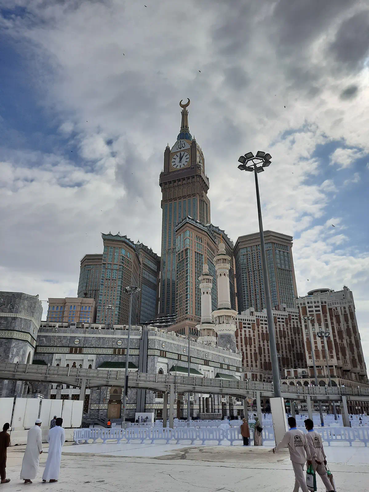

✈️
1. Jenis Pesawat
Salah satu faktor utama yang memengaruhi harga perjalanan umrah adalah jenis penerbangan yang digunakan.
- + Penerbangan langsung memberikan perjalanan yang lebih praktis.
- + Perjalanan panjang membuat kenyamanan penerbangan menjadi penting.